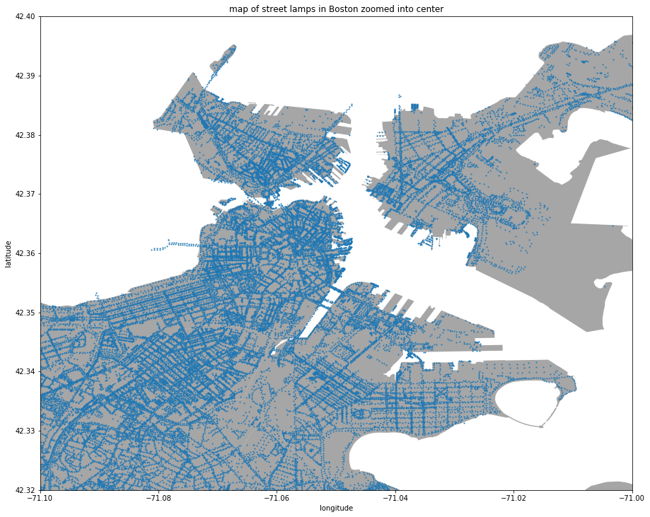
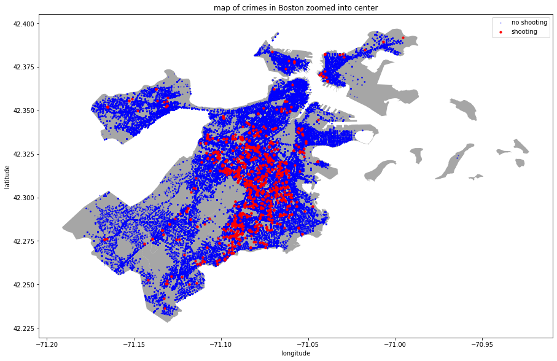
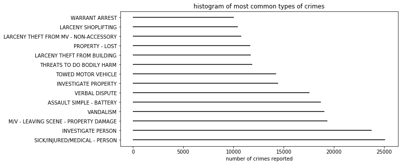
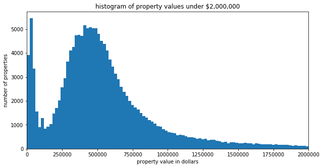

Exploratory Data Analysis (EDA)
Before modeling, we needed to understand the datasets we were working with, using statistics and graphing.

As previously mentioned, we're concerned with two types of data to better understand and predict crime: 1) location data and 2) economic data. We began our analysis by looking at location data to better understand the relationship between crime and its location in Boston.
We plotted the location of all street lamps in Boston which can be seen in the image to the left. We were interested in seeing if there were any anomalies, such as areas that might have data missing about nearby street lamps. Comparing this image to other maps of Boston that we have seen before, the dataset appears to be comprehensive and the street lamps distributed as we might expect.
The street lamps are clearly placed in a grid-like pattern throughout Boston which makes sense given the way urban planners typically construct neighborhoods. We see very few street lights in the top right of the map. This makes sense as this is not residential land but is part of the Boston Logan Airport. We'll want to be careful when analyzing crime in this area as the lack of street lamps might throw off the association we're investigating.

Next, we wanted to continue to investigate location data, but specifically through the lens of where crimes are happening in the city. We constructed another map of one of our datasets, this time plotting incidents of crime in Boston. We chose to color code the map to differentiate between the most egregious crimes (i.e., shootings) and all other forms of crime. We've colored non-shootings in blue and shootings in red. We intentionally chose this binary distinction because shootings were the most commonly reported crime in the news, and thus the most interesting/relevant to map.
The plot shows us what we might expect: incidents of crime are correlated with population density. Thus, the more populated areas of Boston in its center sees more crime than the outskirts. The shootings appear to be distributed almost entirely in downtown, urban areas of Boston. We also see that there are pockets of areas in the city that experience no crime whatsoever. We investigated each of these to ensure this was not a problem with our plot or the dataset itself. We found that many of these areas are industrial centers or non-residential areas, such as factories or the Boston Logan airport. Thus, it's plausible no crimes took place here or at least they were perhaps reported offsite once not on these premises.

Our crime incidents dataset features markers for the different types of crime that ocurred. We constructed a bar plot of these categories to the left so we could better understand the types of crime that occur in Boston and the data we have available to work with.
As we might expect, the most common type of crime is one that is not a crime at all: police responding to sick/injured individuals after a 911 call is placed. We were surprised to find that arrests of suspects and property damage caused by motor vehicles where the driver left the scene are the next two most common forms of crime. Overall, the majority of crimes are non-violent, such as theft and larceny.
The histogram shows that there are quite a few incidents of vandalism that occurred in the City. We're interested in investigating the relationship between vandalism and the presence of street lights, so we having a large sample of these crimes to model off of is very helpful.

We performed a variety of other EDA tasks, but the last one we want to share is regarding property values, the second type of data we explored in our analysis. We created a histogram (seen on the left) of property values in Boston to better understand the distribution of property values throughout the city.
We find that property values are not distributed normally in Boston. The distribution is right-skewed with many extremely expensive properties pulling the average up, well beyond the mean. The plot also appears to be somewhat bimodal, with a second peak at the lower end of the distribution where a number of lower value properties are recorded. The range overall is quite remarkable: some properties are worth as much as $2 billion. The majority of the values are under $2 million though, which is in line with what we'd expect.
Overall, the EDA process was extremely helpful for us in better understanding our data and its limitations. We were able to use this analysis to inform how we approach the model-building process and could then better understand where our models might fail.